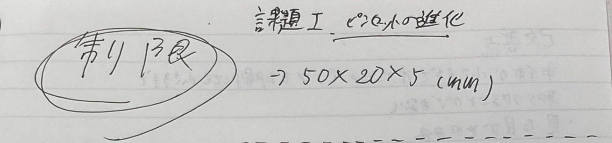
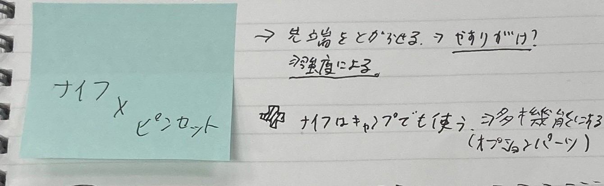

Ⅰ.Knife×Pinset
これ一本で大体何とかなるツールが欲しかった。というのも私は昔からかーなーりのめんどくさがりでどんくらいめんどうかというとなにかを出し入れする時点で面倒。なんというか言葉にするのが難しくてもうすでに面倒なんですけど
面倒なことをめんどくさく無くするのがめんどくさい！そういうわけでできるだけ多機能性のものを作っていきます
Ⅱ.構想段階の手書きスケッチ、ストーリーボードなどの写真
 
もうメモのやつ捨てちゃってるので新しく作成。お得意の面倒が発動して字がきたねえです。なんなら誤字ってる。おもろ。
Ⅲ.実際に作った作品の画像

Ⅳ.設計ファイル

Ⅴ.作品の説明
またそれ以外の機能もオプションパーツとして考案してて、そのパーツをピンセットの先端に取り付けることで本来のピンセットとしての機能は失われてしまうが
きのみを割るツールや缶切りができるツール、ドライバーにもなりえる可能性を秘めてます。
設定上は。言いましたからね！設定上はって！
Ⅵ.なぜこの作品を作ろうという想いに至ったか
割と友達と山や川などいく機会が多く、そこでナイフを使ったりするのだが本体が大きすぎて細かい部分ができなかったり切りすぎて果汁や血が出てきてしまうことが
しばしばあり、そこで超小型のナイフがあればいいと思いました。
また、それだけでは物足りないため、ナックルパーツや缶切りパーツ、ドライバーパーツなどを考案してます。
Ⅶ.You Tube 使用動画
こんな感じで魚や少し硬い程度のフルーツなら簡単に切れます。この状態でやすり掛けしてないので頑張れば木の実も切れそう。（動画はパイン）
改良の余地はある。
Ⅷ.追加パーツ
見た目がそのまんまだと思ったのでオプションパーツをアイデアのみではあるが作成した。
このような多機能ツールをいつかなんらかの形で形にしたいとは考えている
ぜんっぜん思いつかん。ハンマーに関してはもうサイズが違うんよ…笑
F.フィードバック
まず改善点について。１つめは制限があったとはいえ、本体が小さすぎたせいでオプションパーツを印刷したとしても取り付けることができない点だ。見ればわかる。
第一印象なんだと思いますか？もしかしたら同じ感想を抱くかもしれません。日常的に食べてるアレですよ。米やんけ
こんなのもう米じゃん。大量生産したらプラモデルできるじゃん。想定ならきりかなんかで穴を開けて先端パーツに取り付ける形でした。
ですがさすがに小さすぎて危ないので断念。
2つめ。そのまんま。ですがそのおかげでオプションパーツの設計はしやすかったです。
次に感想。こんなにもうまくいかないの久々で逆に燃えました。すごく楽しい。なのでデータの作成とプリントは続けます。でもってまとめたのはここからみれます
さいごにまとめ!はじめてCADを触ってみて創造以上に難しかったです。ですがそれ以上に形となったときの達成感はいままでに感じたことがないくらいでした！
今後は複雑な造形にも挑戦していきたいです